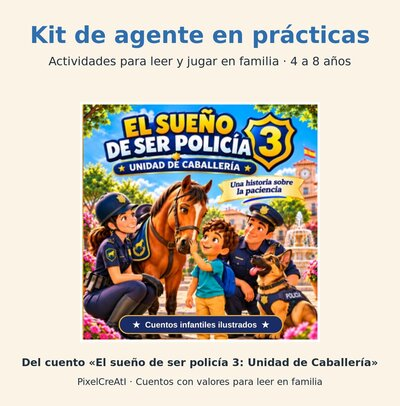
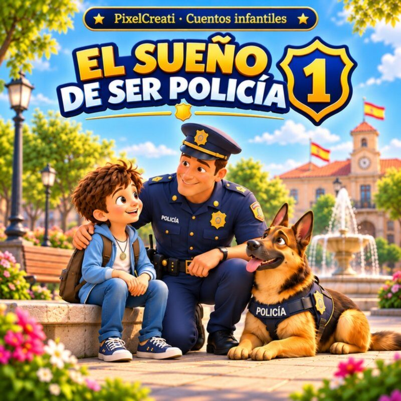
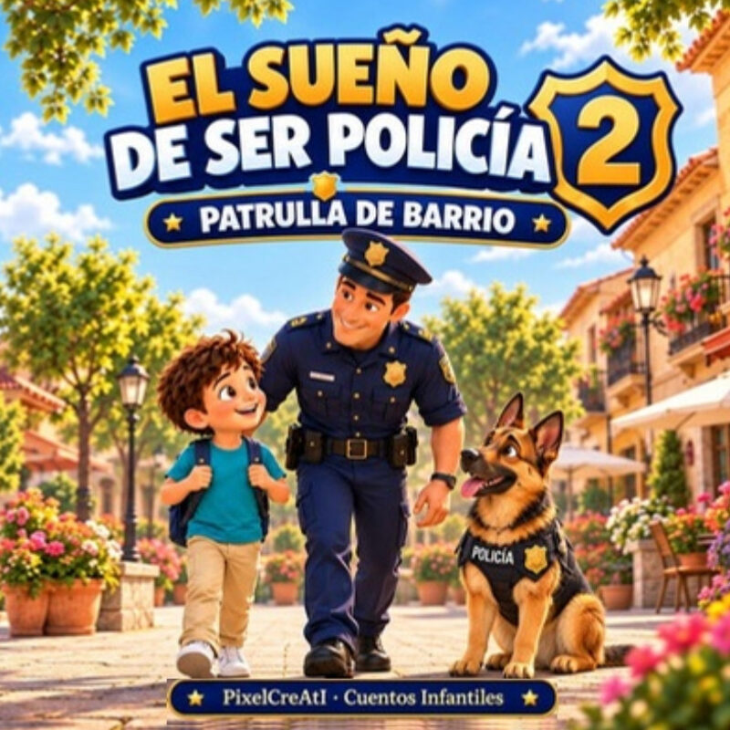
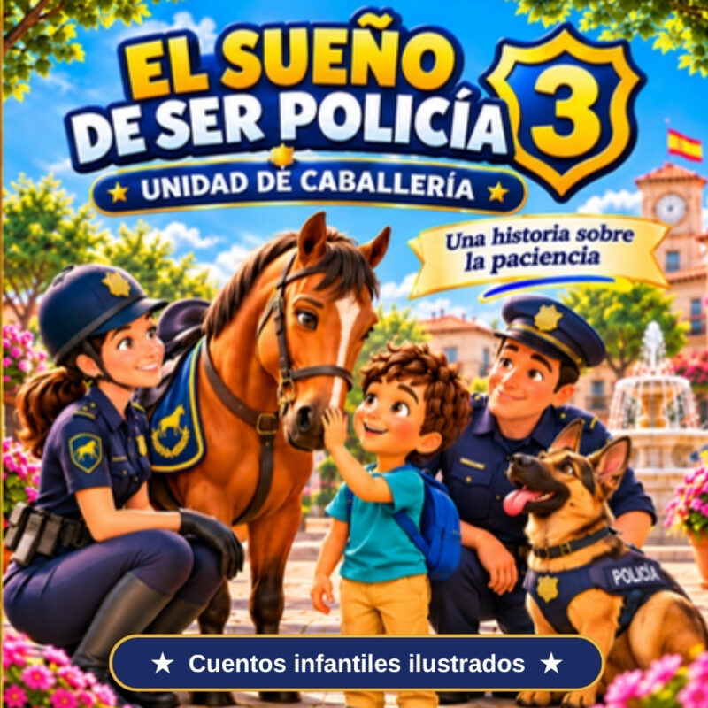
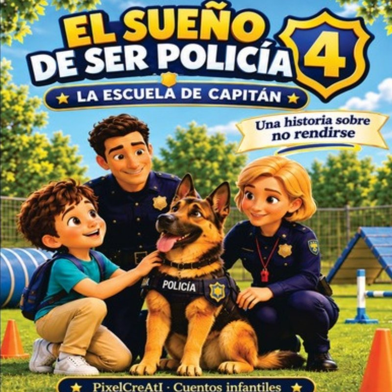

Kit gratis de agente en prácticas 🚓
Para leer, jugar y hablar en familia después del cuento · 4 a 8 años

Ocho páginas para imprimir que salen del cuento «El sueño de ser policía 3: Unidad de Caballería»:
- Consejos para acercarse a un caballo de la policía.
- Preguntas para conversar después de leer.
- Ficha «¿Qué recuerdas?» con soluciones y juego «¿Qué harías tú?».
- Consejos para familias y un diploma de agente en prácticas.
Suscríbete de forma voluntaria para conocer próximos cuentos y recursos gratuitos. Como mucho, un correo promocional al mes.
Sí, quiero recibir las novedadesSe abrirá tu aplicación de correo con un mensaje preparado. Para solicitar el alta debes enviarlo tú: pulsar este botón no te suscribe. Solo para mayores de edad. Puedes darte de baja respondiendo «BAJA». Más información en la política de privacidad.
El kit se descarga gratis, sin dar tu correo ni suscribirte.
La colección

1 · El sueño de ser policía
2 · Patrulla de barrio
3 · Unidad de Caballería
4 · La escuela de CapitánPablo sueña con ser policía y, en cada libro, descubre junto al agente Juan y el perro policía Capitán que lo importante no es el uniforme, sino ayudar a los demás.
Ver «Unidad de Caballería» en Amazon